CÁC GIỐNG CHÓ NUÔI Ở VIỆT NAM.
I: Giống chó nội :
Hiện nay ở Việt Nam có 4 giống chó đang được nuôi và cho lai với nhau tạo ra nhiều con lai khác nhau có tầm vóc và màu lông khác nhau. Giống chó vàng tuyền là một nòi chó săn rất tinh khôn, tích cực bám mồi, dũng cảm và trung thành với chủ và cũng là loài chó giữ nhà rất tốt. Giống chó của người H’Mông cũng có khả năng săn thú giữ nhà tốt, tầm vóc to tạo khả năng lai tạo với giống chó chăn cừu Châu Âu.
1. Giống chó vàng. Có tầm vóc trung bình, cao 50-55 cm, nặng 12-15 kg, nuôi phổ biến ở nước ta đẻ giữ nhà, săn thú và làm thực phẩm. Chó đực phối giống được ở lứa tuổi 15-18 tháng tuổi, chó cái sinh sản được ở tuôi 12-14 tháng, mỗi lứa để trung bình 5 con.
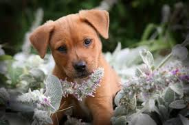
2. Giống chó H’Mông. Sống ở miền núi cao, có tầm vóc lớn hơn chó Vàng. Cao 55-60 cm, nặng 18-20kg, được dùng để giữ nhà và săn thú. Chó cái đẻ trung bình mỗi lứa 6 con.

3. Giống chó Lào.
Sống ở trung du và miền núi, lông xồm màu hung có 2 vệt trắng trên mí mắt, có tầm vóc lớn hơn, cao 60-65 cm, nặng 18-25 kg. Chó cái đẻ trung bình mỗi lứa 6 con.
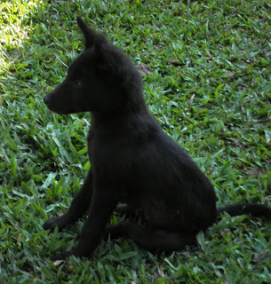
4. Giống chó Phú Quốc.
Có màu nâu xám, bụng thon, trên lưng lông mọc có hình xoắn hay lật theo kiểu “ rẻngooii”, lông vàng xám có các đường kẻ nhạt chạy theo dọc thân, tầm vóc tương tự giống chó Lào. Chó cái đẻ trung bình mỗi lứa 5 con. 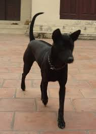
II. Giống chó nhập nội đã được nuôi thích nghi ở Việt Nam. Chó nhập từ nước ngoài vào nước ta thường có chất lượng con giống rất tốt, được coi là thuần chủng hơn chó nuôi sinh sản trong nước cùng chủng loại. Tuy nhiên, chó nhập nội thường gặp một số khó khăn như trong quá trình mua, nuôi dưỡng, vận chuyển từ nước ngoài về Việt Nam làm chó bị mệt. Chó bị thay đổi lớn về chế độ ăn,chăm sóc, thời tiết, môi trường nên có ảnh hưởng lớn đến sức khỏe. Để khắc phục những yếu tố này những người nuôi chó nhập nội cần tuân thủ những nguyên tắc sau khi mới mua chó về :
- Chế độ ăn uống và dinh dưỡng phải tuân theo sự chỉ dẫn của người môi giới mua bán chó vì họ đã hiểu rõ nguồn góc và tập tính của từng giống chó. Chú ý không cho chó ăn quá no, nhưng nên cho chó ăn nhiều bữa.
- Cần đảm bảo vệ sinh sạch sẽ ở mọi khâu nuôi dưỡng và chăm sóc, không để chó ăn đất cát, uống nước bẩn.
- Cần nhốt chó 7-10 ngày trong chuồng hoặc cũi chó sạch sẽ, tuyệt đối không cho chó ra ngoài sân vườn.
- Chỗ ở mới của chó phải đảm bảo mát về mùa hè, ấm áp về mùa đông, không bị gió lùa, nắng chói,mưa hắt.
- Cần thực hiện việc tẩy giun sán và tiêm phòng bệnh bằng vacxin cho chó theo định kỳ.
- Theo dõi chặt chẽ tình hình sức khỏe của chó( nhiệt độ. phân, nước mũi, mắt và ăn uống...) và thông báo kịp thời chó bác sỹ thú y.
- Luôn gần gũi với chó, không nên để chó một mình, tránh stress ảnh hưởng đến sức khỏe và tâm lý của chó trong quá trình nuôi sau này. Hiện nay, ở nước ta đã nhập vào rất nhiều giống chó nuôi làm cảnh, giữ gìn , làm vệ sỹ… nhưng ở đây chúng tôi chỉ giới thiệu một số giống chó tiêu biểu như sau :
1. Giống chó becgie Đức ( Berger) .
Chó chăn cừu Becgie Đức đẹp và thông minh, đánh hơi giỏi, luôn vui tươi, tự tin, dũng cảm và trung thành. Chúng năng động và cần được bận rộn. Nếu bị bỏ một mình hoặc buồn chán nó có thể than vãn rên rỉ liên tục. Giống chó này nếu được nuôi dưỡng tốt,dạy tốt sẽ là con thú cưng tuyệt vời, chiếm được cảm tình lớn nhất của những người yêu thích chó ở nước ta và trên toàn thế giới, Ở Việt Nam hiện nay, khắp mọi nơi, mọi vùng đều thấy chó con lai Becgie Đức. Giống chó này vẫn được quan tâm nhất trong việc chơi, sử dụng và đặc biệt quan trọng nhất đối với những người kinh doanh hoặc là kinh tế từu chó ( chăn nuôi, mua bán cho).
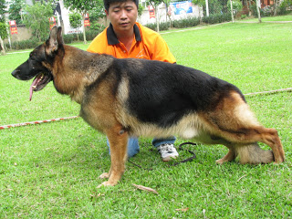
Chó có tầm vóc tương đối lớn so với các giống chó nội, dài 110-112cm, cao 56-5cm đối với chó đực và 62-66cm đối với chó cái, khối lượng 28-37 kg. Bộ lông ngắn, mềm, màu đen sẫm ở than và mõm; đầu, ngực và 4 chân có màu vàng sẫm. Đầu hình nêm, mũi phân thùy, tai dỏng hướng về phía trước, mắt đen, răng to, khớp răng cắn khít. Cổ chắc, ngực nở hình ovan, u vai, lưng chắc rộng có độ dốc về phía sau, bụng thon, đuôi dài hình lưỡi kiếm. Chân trước thẳng đứng, chân sau đứng hơi choãi về phía sau, khoeo chân sau giống khoeo mèo. Nuôi trong điều kiện nước ta chó đực có thể phối giống khi 24 tháng tuổi, chó cái có thể sinh sản khi 28-20 tháng tuôi, chó cái đẻ mỗi năm 2 lứa, mỗi lứa 4-8 con.
2. Giống chó Dalmantian.
Giống chó này thường được gọi là bánh Pudding nhân nho khô vì bộ lông đốm của chúng. Loài chó này rất thông minh, năng động, thân hình rắn chắc, cường tráng, có sức chịu đựng rất bền bỉ, tôn trọng mệnh lệnh của chủ, thần kinh cân bằng, được sử dụng vào mục đích thể thao và đa số chúng được nuôi làm thú cưng tốt mã và tốt bụng trong gia đình.
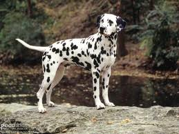
Chó có tầm vóc trung bình cao: cao 56-61 cm, dài 112-113cm, nặng 32kg. Bộ lông màu trắng mịn với những đốm đen trang điểm; lúc còn chó con bộ lông trắng tuyền, khi lớn lên mới có các đốm đen; cổ dài; lưng thẳng có độ nghiêng về phía sau; chân cao thẳng, chân sau có khoeo giống khoeo mèo; đuôi dài. Chó đực có thể phối giống lúc 25-28 tháng tuổi, chó cái sinh sản khi được 20-22 tháng tuổi, mỗi lứa đẻ 5-10 con.
3. Giống chó Borzoi.
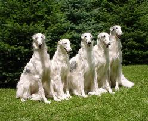
Đây là giống chó săn lâu đời của nước nga, rất trang nghiêm, thích chạy phi, dịu dàng và trầm tĩnh nhưng lại đầy năng lực. Loài chó này được nhập về Việt Nam để nuôi làm cảnh và giữ nhà, thường được gọi là chó “ngao xù” vì có bộ lông xù dài. Chó có tầm vóc trung bình, cao 63-74cm, dài 110-112 cm, nặng 33kg. Giống chó này dùng làm chó triễn lãm thì tuyệt nhưng ít thành công ở các cuộc thi đua hay ứng xử phục tùng dù có thể huấn luyện chúng làm chó kiểng khá dễ dàng. Bộ lông xù dài của chúng có nhiều màu khác nhau,có thể là màu trắng xem lẫn các mảng nâu sẫm và vàng, có khi toàn thân màu trắng nhưng mặt có màu vàng nâu. Đầu dài thô, mõm nhọn dài, tai cụp, cổ dài, ngực nở sâu, lưng thẳng có độ nghiêng về cuối thân ,chân trước cao thẳng đứng, chân sau choãi về phía sau, khoeo có hình khoeo mèo. Giống chó này chắc khỏe, dễ điều khiển, thân thiện với gia đình, trẻ em nhưng ghét người lạ. Chó đực có thể phối giống lúc 24-26 tháng tuổi, chó cái có thể sinh sản ở lứa tuổi 18-20 tháng,chó cái đẻ mỗi lứa từ 4-7 con.
4. Giống chó Cavalier-King Charles Spariel ( gọi tắt là chó Spaniel).

Giống chó này được nuôi để ắm bế, nổi tiếng từ năm 400 năm nay. Đặc biệt nó có khả năng săn thú nhỏ. Chúng rất thân thiện nếu được đối xử nhẹ nhàng, thích chơi đùa và thích đi bộ thật lâu dù không cần vận động nhiều. Chó có tầm vóc nhỏ, cao 36cm, năng 5-8kh, tính tình dịu dàng, lúc nào cũng vẫy đuôi và ít ồn ào. Bộ lông mượt mà của chúng không bao giờ cần xén tỉa mà chỉ cần được chải hàng ngày để giữu cho sạch sẽ. Giống chó này có bộ lông màu đen và nâu vang, đỏ tuyền, tam thể hay đỏ pha trắng, có con lông xù màu nâu sẫm xen các mảng nâu nhạt ở đầu và thân; trán quanh mõm, ngực và 4 chân màu trắng. Đầu dài thô mỗm rộng,tai dài rộng và cụp, mắt to tròn, mũi phân thùy màu đen hoặc nâu,cổ thẳng, ngực nở sâu , bụng thon, đuôi cộc, bàn chân chụm.
Chó có thân hình rắn chắc và ra sức, thần kinh cân bằng nhưng rất hung dữ và dũng cảm khi tấn công kẻ địch.
Chó đực có thể phối giống lúc 20 tháng tuôi, chó cái có thể sinh sản lúc 16tháng tuổi. Chó cái đẻ mỗi lứa từ 3-6 con.
5. Chó Papillon.

Papillon là giống chó thông minh, tình cảm, thích đùa giỡn. Chó có bộ lông dài xù màu đỏ, đen hay tam thể trên nền trắng, lượn song màu hạt dẻ, đôi khi có màu vàng sẫm hoặc màu trắng sữa. Cái đuôi lông xù của nó vắt trên lưng nên người ta gọi là “ Spaniel đuôi sóc”. Bộ lông dài cần được chải hàng ngày để không bị rối. Giống chó này có hình dạng rất ngộ nghĩnh: đầu to. Mõm rộng và rất ngắn hầu như liền tịt với mũi, mũi rộng chia thùy,tai to có lông dài phủ xuống hai bên, hoặc mắt to đen hoặc nâu sẫm, 4 chân thấp lùn. Ngoài ra còn có một giống chó Papillon khác có tai cụp gọi là Phalene. Chó có tầm vóc nhỏ, thấp lùn, cao 20cm, dài 38cm, nặng 5,0- 5,5 kg.
6. Giống chó Pug.
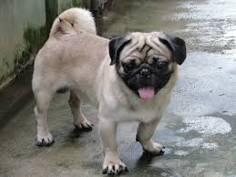
Đây là giống chó nhỏ, vui nhộn, ngộ nghĩnh, rất thông minh hiền lành,lại yêu mến trẻ em. Người ta nuôi chó này làm cảnh vì chúng tốt bụng và thân thiện, dễ thích nghi với nơi ở mới, có óc khôi hài, dễ dạy và là con vật cưng lý tưởng cho mọi người ở mọi lứa tuổi. Bộ lông ngắn của giống chó này không cần chải nhiều, màu hung và mặt đen hoặc đen láng toàn thân hoặc nâu nhạt, vàng sẫm nhưng khoang mắt, mũi, mõm có màu đen. Loài chó Pug khỏe mạng , thần kinh cân bằng, đầu to thô, mõm ngắn và thô, mũi chia thùy, tai cụp, ngực sâu, thân chắc rắn, đuôi ngắn và cuộn. Chóa cao 30-33cm, dài 50-55cm, nặng 5-8kg. Giống chó này hay bị thương ở mắt nên khi nuôi cần lưu ý.
7. Giống chó Chihuahua.

Giống chó này từ xa xưa đã được nuôi làm cảnh ở các cung đình và các gia đình quý tộc phong kiến Trung Quốc, ngày nay chó được nuôi làm cảnh ở hầu hết các nước trên thế giới. Ở nước ta , giống chó này còn được gọi là “cho fok hươu” vì hình dáng nó giống con hươu thu nhỏ hoặc còn gọi là “chó bỏ túi” vì chó tầm vóc rất nhỏ, chỉ nặng 2,1-2,7 kg, cao 16-20 cm, dài 30cm, người ta có thể cho vào túi ba lo mang đi du lịch. Bộ lông của giống chó này có màu vàng sẫm, hoặc màu nâu nhạt nhưng tai, mõm thường có màu sẫm hơn. Chó đực có thể phối giống khi 14 tháng tuổi, chó cái có thể sinh sản khi được 9-10 tháng tuổi, mỗi lứa đẻ 3-6 con. Loài chó này khỏe mạnh, mỗm dài, tai dài dựng đứng, bụng thon nhỉ, chân mảnh chắc, đuôi ngắn, không thích người lạ, thậm chí tỏ ra hung dữ nên nuôi vừa làm cảnh vừa giữ nhà rất tốt.
8. Giống chó Bichon fries.

Có nguồn gốc từ Pháp, ở nước ta được nuôi làm cảnh cũng từ lâu và người ta gọi nhầm là “ chó xù Nhật”, chó có tầm vóc nhỏ, cao 30cm, dài 40cm, nặng 5,0 kg. Bộ lông của nó xù dài thẳng hoặc lượn song, trắng tuyền, đặc biệt lông ở tai và cổ, đuôi thường dài hơn nên trông rất quý phái. Đây là loài chó thông minh, hiền lành, yêu mến trẻ em, thích hợp nuôi ở thành thị. Đầu ngắn, mõm dài, tai cụp, cổ ngắn, ngực nở, chân thấp, đuôi cong.
9. Giống Pekingese.

Có nguồn gốc từ bắc kinh được nhập vào nước ta năm 1986, Từ thế kỷ 19 chó đã được du nhập vào Châu Âu và được nuôi làm cảnh trong các gia đình quý tộc. Giống chó này có hình dạng rất ngộ nghĩnh, đầu to, mõm rộng và rất ngắn nhuw liền tịt với mũi, tai to có lông dài phủ xuống 2 bên, mắt to đen hoặc nâu sẫm, 4 chân thấp lùn. Loài chó này có bộ lông xù dài lượn song màu hạt dẻ, có màu vàng sẫm hoặc trắng sữa.
10. Giống Shi Tzu.

Giống chó này có vẻ mặt dịu dàng , bộ lông dài ống ả và bản tính vui tươi. Bộ lông của chúng cần được chăm sóc nhiều, nếu không sẽ bị rối và có mùi hôi. Shi Tzu là giống chó luôn thích chơi đùa và đầy tình cảm. Bộ lông của chúng có màu rất đa dạng, nhưng nếu có một vết trắng sáng bóng trên trán và chỏm đuôi màu trắng thì sẽ được đánh giá cao. Chó Shi Tzu cần được vận động vừa phải và có thể thích đuổi theo một quả bóng. Chúng thích chơi đùa và sẽ tham gia chơi hết mình vào bất cứ trò chơi nào. Chúng có mũi ngắn, mắt to nên dễ bị thương do va chạm trầy sước, nên khi nuôi giống này cần phải kiểm tra mắt hàng ngày.
11. Giống Miniature Schnauzer.
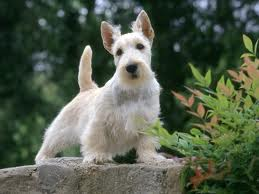 Giống chó này bé xíu và thích sống ngoài trời. Tuy nhiên, nó cũng bằng lòng với cuộc sống trong nhà ở thành thị. Đây là một giống chó khỏe mạnh, lông thô, cứng, lông mặt dài và lông mày rậm. Là giống chó thông minh và lanh lẹ, là bạn trung thành và là thú cưng cho gia đình. Dù nhỏ con, chúng đủ dẻo dai để chơi những trò tốn sức và đủ vững chãi để làm bạn tốt với người già. Giống chó này phải được cắt tỉa lông thường xuyên, lông mặt, lông mày phải được giữ sạch sẽ để khỏi hôi hám. Lông và cẳng phải được chải mỗi ngày. Lông của chúng đen tuyền hoặc muối tiêu, một pha trộn giữa các màu xám, đen và trắng.
11. giống chó Alaskan Malamute
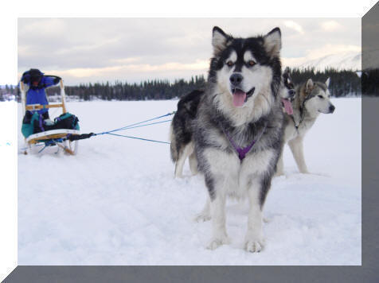 Miền Bắc Cực băng giá quanh năm tuyết phủ là một vùng lãnh thổ vô cùng rộng lớn. Dân Esquimo là người đầu tiên đặt chân lên vùng đất này; trong đó có bộ tộc Mahlemut, vốn nổi tiếng với giống bò xạ hương và giống chó sói được đặt tên theo bộ tộc là Malamute và tồn tại đến ngày nay. Đã từ rất lâu, dân du mục ở đây đã khám phá ra khả năng di chuyển và sức kéo mãnh liệt của chúng trên những quãng đường dài đầy băng tuyết trơn trượt … Họ đã cho lai tạo với những giống khác như Newfoundland hoặc St Bernard để có được gống chó ngày càng to hơn, khoẻ hơn, bền bỉ hơn mà vẫn chịu được thời tiết khắc nghiệt của Bắc Cực. Dân Eskimo rất tự hào về giống chó của họ vì không một giống chó nào có thể thay thế được nhiệm vụ hoàn thành tốt quãng đường hằng ngàn dặm phải vượt qua. Bất kỳ du khách nào khi đến đây đều được nghe kể về giống chó Alaskan Malamute tuyệt vời này. Chúng có hai lớp lông dày ngăn không cho cái lạnh buốt xương ngấm vào cơ thể. Lớp lông dài bên ngoài đặc biệt không thấm nước; lớp lông trong ngắn hơn nhưng rất dày, có cấu trúc như lông cừu. Do vậy, việc chăm sóc lông cho chúng đòi hỏi phải kiên trì và chỉnh chu. Alaskan Malamute đẹp nhất là nhờ bộ lông dày mượt, đặc biệt cái đuôi hình bông lau xõa đều cong ngược trên lưng.
Những bài tập đối với chó trưởng thành là rất khắc khe để bảo đảm cho sức khoẻ và tinh thần của chúng luôn được hưng phấn. Nếu có điều kiện , thỉnh thoảng chúng ta nên đưa chúng đến những vùng ven rộng mát hoặc biển cát mênh mông để chúng thoả thích chạy nhảy .
TÍNH CÁCH : Thông minh, hiền hoà, bao dung. Dù cái hay đực, Alaskan Malamute luôn biết vâng lời và chịu khó tập luyện. Đặc biệt rất thích trẻ con. Alaskan Malamute không có thói quen nhặt bóng hay tha đồ vật như một số giống chó săn khác do từ cổ xưa, mục đích của dân Esquimo không sử dụng chúng trong săn bắt mồi mà chỉ để kéo xe nên bản tính săn mồi trong chúng rất ít. Sự thân thiện, hồn nhiên của Alaskan Malamute được nhiều người yêu thích làm thú cảnh trong gia đình. Chúng có thể tự đi rất xa mà vẫn tìm được đường về. Theo nghiên cứu thì do tập tục sống thành bầy đàn, nên khi nuôi trong gia đình, Alaskan Malamute rất biết nghe lời chủ bởi chúng coi chủ như con đầu đàn, luôn phục tùng và luôn có khuynh hướng sẵn sàng bảo vệ bầy đàn của mình khi bị tấn công hay bị xâm phạm.
KHẢ NĂNG : Ngày nay Alaskan Malamute chủ yếu được nuôi ở miền Bắc Cực băng giá và những vùng có tuyết phủ quanh năm. Việc di chuyển trên tuyết trong không gian rộng lớn thì không con vật nào có thể sánh bằng Alaskan Malamute. Hằng năm tại Canada, Mỹ và một số nước khác thường tổ chức những cuộc đua mang tính chất thể thao nhằm đáp ứng đà phát triển giống chó kéo tuyết này. Tại một số thành phố hay nông trại, người nuôi cũng có mục đích tương tự nhưng những “xe tuyết” được gắn bánh hơi để thồ nông sản và những vật dụng khác thay cho ngựa. Từ thuở dân Esquimo đặt chân đến Bắc cực cho đến nay, giống chó Alaskan Malamute thường được nhân giống để phục vụ cho mục đích duy nhất là kéo xe. Với đàn chó từ 4 con đến 12 con mà không hề có sự xích mích giữa chúng. Với một sức khoẻ vô cùng sung mãn có thể vượt mọi nẻo đường tuyết phủ. Với lòng nhiệt tình tuân phục mệnh lệnh và sự chịu đựng thời tiết khắc nghiệt đã nằm trong huyết quản chúng : Alaskan Malamute thay cho bất kỳ loại hình hoặc phương tiện di chuyển nào trên vùng đất phương Bắc xa xôi hẻo lánh này. Alaskan Malamute là giống chó cực kỳ thông minh nên có khả năng học tập rất nhanh và rất biết vâng lời. Việc huấn luyện đương nhiên phải giao cho người có kinh nghiệm và lương tâm. Bản chất rất tò mò và vô cùng hiếu động nên Malamute rất thích được lao động. Không gì chúng thích bằng khi được kéo một vật gì đó trên một đoạn đường dài ( chung với bầy đàn càng tốt ). Bạn hãy thử buộc chúng vào xe gắn máy bằng một sợi xích dài khoảng 1 mét. Ban đầu bạn cho xe khởi động ở tốc độ khoảng 15km/giờ. Sau khi con Malamute của bạn đã làm quen với tốc độ “nước kiệu”, bạn hãy mạnh dạn tắt máy xe và cho nó kéo tự do một đoạn đường khoảng vài cây số . . . Chắc chắn bạn sẽ vui sướng khi được điều khiển chú chó cưng như ý của mình và hơn thế nữa, con Malamute cũng sẽ vui sướng gấp nhiều lần vì được lao động.
NGUỒN GỐC : Alaskan Malamute đã được phát triển ở Alaska từ rất lâu đời, trước khi Alaska trở thành 1 bang của Hiệp Chủng Quốc Hoa Kỳ và ngẫu nhiên thì chúng trở thành một giống chó Mỹ. Khi những người Nga khám phá ra vùng Bắc Cực băng giá này họ cũng có nói đến giống chó Malamute này để so sánh với giống Siberian Husky của họ .
TIÊU CHUẨN : Không giới hạn về kích cở nhưng hiện nay theo tiêu chuẩn được AKC (American Kennel Club ) ghi nhận thì chiều cao từ 58 cm đến 71 cm (23 – 28 inc). Cân nặng từ 39 kg đến 56 kg (85 – 125 lb ).
ĐẶC ĐIỂM : Xương chân lớn rất cơ bắp. Cặp mắt màu nâu , nâu đen hình quả hạnh rất thân thiện, vui, thậm chí nghịch ngợm. Tai nhỏ đầy lông tơ. Bộ lông dày giúp giữ thân nhiệt chịu đựng cái lạnh khủng khiếp của miền Bắc Cực băng giá quanh năm. Con cái đặc biệt nhỏ hơn con đực. Màu lông Alaskan Malamute đa dạng : xám & trắng, xám lông chồn & trắng, đen & trắng hoặc toàn thân trắng. Sắc lông đỏ rất quý hiếm được AKC chấp nhận và không được phép mang ra khỏi nước Mỹ. Quy định mới nhất của AKC loại ra khỏi giống nòi những con nào có cặp mắt màu xanh, vì cho là dấu hiệu của lai tạo giống.
12. Giống chó Husky
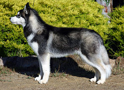
A black-and-white Siberian Husky male
Tên khác Chukcha, Chuksha, Keshia
Biệt hiệu Sibe, Husky
Nguồn gốc Siberia, Russia
Nặng Cái 35-50 pounds Cao Đực 21-23½ inches (53-60cm) Cái 20-22 inches
Bộ lông Thick double coat - thick undercoat & soft outer coat.
Màu Tất cả màu sắc từ đen tới trắng.
Kích thước nhỏ 6-8 puppies[1]
Tuổi thọ 12-15 năm
Chó Husky Sibir là một nòi chó sống ở đông bắc Siberia,Nga.Chúng có lông màu trắng xám,hai chân dài,trông rất cá tính.Chó husky được nhiều người ưa thích vì nó dũng cảm ,trung thành tuyệt đối và thông minh.Giống chó này được nhiều người nuôi ở Việt nam , nếu chúng ta muốn nuôi hãy cho nó những thứ nó thích.Giống chó Husky được nhiều hãng phim,quần áo ưa thích vì với cá tính của nó.
13. Giống chó American Pit Bull
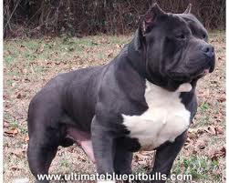
American Staffordshire Terrier (AKC) hoặc American Pit Bull Terrier (UKC)
Giá:
Nguồn gốc Vào thế kỷ 19 tại vùng Staffordshire của Anh quốc việc lai tạo giống chó Bull với nhiều loại chó terrier đã tạo nên giống chó lực lưỡng, tích cực và đầy tính chiến đấu Bull Terrier. Được du nhập vào Mỹ, giống chó này được các nhà chọn giống đánh giá cao và quyết định chọn lọc theo hướng tăng chiều cao, cân nặng và kích thước đầu. Hiện nay chúng được công nhận như một giống chó riêng biệt, có kích thước to và lớn hơn so với người bà con ở Anh. Sau khi các cuộc đấu chó bị cấm tại Mỹ vào năm 1900, giống chó này được chia làm 2 nhóm, nhóm chó triển lãm và nhóm chiến đấu. Nhóm triển lãm được gọi là American Staffordshire, nhóm chiến đấu gọi là American Pit Bull Terrier. AS chủ yếu được sử dụng trong việc canh giữ, bảo vệ, cảnh sát, và kéo vật nặng.
Mô tả: Là giống chó có cơ bắp rất phát triển, chắc lẳn, nhanh nhẹn và đặc biệt mạnh mẽ so với vóc dáng của chúng. Chúng có đầu to, khoẻ mạnh, mõm ngắn và hàm khoẻ cứng như thép. Tai thường bị kiền lại từ nhỏ. Mắt tròn, đen. Răng khoẻ và sắc xếp thành hình răng cưa. Lông ngắn, dày và bóng mượt. lông có nhiều màu khác nhau, nhưng phần lông màu trắng không được chiếm hơn 80%. Đuôi thon nhọn về chóp. Tai dựng đứng. Tiếng Anh gọi là chó Pit Bull Terrier Mỹ. Tính cách là giống chó vui vẻ, hoà đồng, kiên định và đáng tin cậy. Thông minh và yêu quí loài người. Đây là giống chó đặc biệt trung thành và yêu quí gia chủ. Yêu trẻ. Chúng luôn tìm cách để làm vừa lòng chủ nhân. Đây là thành quả của hơn 50 năm lai tạo giống, đã tạo ra giống chó thân thiện, tin cậy và đặc biệt yêu quí trẻ này. Chúng cũng là người sẵn sàng can đảm chiến đấu để bảo vệ chủ và tài sản được giao phó cho đến cùng. Giống chó này có sức đề kháng rất cao với mọi vết thương. Nếu không được dạy dỗ chu đáo, chúng có thể trở nên rất hung dữ. Tương đối ương bướng, vì vậy cần có một chủ nhân mạnh mẽ và biết cách huấn luyện chúng một cách bài bản.
Chiều cao, cân nặng:
Cao: 17 - 19 inches (43 – 48 cm). Chó cái cao 16 – 18 inches (41–46cm)
Cân nặng: 57 – 67 pounds (25 – 30 kg)
Các bệnh có thể gặp Nói chung là khoẻ mạnh, có thể gặp một số bệnh liên quan đến di truyền.
Điều kiện sống AST khá tích cực và có thể thích hợp với điều kiện sống kiểu căn hộ nếu có không gian dành cho nó tập luyện. Loài chó này thích hợp với thời tiết ấm áp.
Hoạt động Cần có các hoạt động tích cực và đều đặn. Nên đeo rọ mõm và dắt chúng bằng xích khi đi dạo phố để tránh xung đột với các loài chó khác
Sống lâu Khoảng 10 - 12 năm.
Chăm sóc cho bộ lông Có mức độ rụng lông vừa phải. Bộ lông ngắn mượt rất dễ chăm sóc. Trải lông bằng bàn chải chuyên dụng và chỉ tắm khi cần thiết.
14. Giống chó Poodle (Toy)
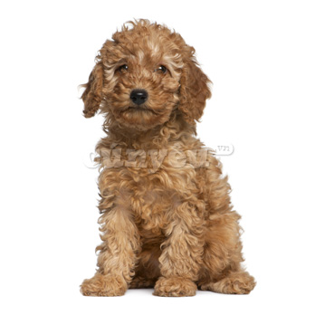
Nhóm: AKC Toy Dog
Kích thước: Rất nhỏ
Chiều cao: Đực 25-38 cm; Cái 23-36 cm
Cân nặng: Đực 3-4 kg; Cái 2-4 kg
Tuổi đời: khoảng 12 - 15 năm
Nguồn gốc: Poodle đã được biết đến trên khắp Tây Âu trong ít nhất 400 năm trở lại đây, tuy nhiên xuất xứ thật sự của chúng vẫn còn đang gây tranh cãi ở các nước Pháp, Đức, Đan Mạch.... Cái tên “Poodle” của chúng xuất phát từ chữ “Pudel” trong tiếng Đức, nghĩa là “thợ lặn”… Chúng có thể bơi rất tốt trong nước lạnh, các thợ săn thường nuôi chúng để săn các loài chim hay bắt cá trên mặt hồ. Không lâu sau đó, người Pháp bắt đầu nuôi và dạy cho chúng biểu diễn xiếc, vì chúng rất thông minh. Và loại hình nghệ thuật này dần phổ biến tại Pháp, dẫn đến tên gọi "Caniche" . Trong thế kỷ 18 chúng trở nên phổ biến với người trong hoàng tộc… Chúng có 3 kích thước chính thức là: Toy, Miniature và Standard, và những phẩm chất tốt của chúng là sự nhanh nhẹn, khả năng quan sát, trí thông minh và vâng lời.
Mô tả: Toy Poodle có chiều dài cơ thể xấp xỉ bằng với chiều cao từ bàn chân đến vai, vì thế nên cơ thể chúng có dạng hình vuông, đầu chúng tròn và nhỏ. Mõm chúng dài, thẳng, hốc mắt hình bầu dục nằm cách xa nhau. Đôi tai dài, thường hay rũ xuống. Chân chúng thẳng, bàn chân có hình bầu dục khá nhỏ và các ngón chân cong, móng chân thường được cắt đi. Chúng có bộ lông xoăn màu rất đa dạng: đen, xanh, bạc, xám, kem, mơ, đỏ, trắng, nâu…
Tính cách: Toy Poodle khá là thông minh, chúng đáp ứng rất tốt các yêu cầu của con người, chúng được cho là một trong những giống chó dễ huấn luyện nhất, chúng vui vẻ và năng động, thích được chơi với mọi người. Tuy nhiên, nếu chúng không được tập thể dục đều đặn thì sẽ có khả năng trở nên nhút nhát, có những biểu hiện tiêu cực như cắn người, phá đồ đạc, gầm gừ, sủa nhiều ( Hội chứng chó nhỏ). Loài chó này không thích hợp lắm với trẻ em, chúng chỉ nên được nuôi dạy bởi người lớn, cụ thể là những người biết tương đối các kỹ năng nuôi dạy chó. Đừng vì kích thước nhỏ nhắn, dáng vẻ dễ thương của chúng mà không đặt ra những biện pháp mạnh cho chúng, chúng sẽ nghĩ rằng chúng là chủ của bạn. Và hãy chắc chắn rằng bạn cho chúng tập thể dục, đi dạo hàng ngày, để chúng có được một nền tảng thể chất vững chắc, khi đó tính cách chúng sẽ được cải thiện nhiều hơn, chúng sẽ hòa đồng và yêu thương con người hơn.
Điều kiện sống: Toy Poodle có thể sống ở thành thị hoặc nông thôn, tuy nhiên chúng cũng khá thụ động. Chúng thích nằm bên cạnh bạn, chúng có thể thoải mái mà không cần ra ngoài sân, tuy nhiên thỉnh thoảng bạn cũng nên đưa chúng ra ngoài đi dạo hoặc bày trò chơi với chúng.
Hoạt động: Hầu hết các giống chó nhỏ đều cần được đưa đi dạo hàng ngày, nếu không chúng rất dễ trở nên tiêu cực. Nếu muốn chơi đùa với chúng, bạn nên chơi với chúng ở sân có hàng rào, để đảm bảo an toàn cho chúng.
Chăm sóc lông: Toy Poodle nên được tắm thường xuyên và cắt tỉa lông mỗi 6-8 tuần, bạn nên vạch tai chúng kiểm tra xem có bọ chét hoặc ve hay không. Poodle rụng lông rất ít và thích hợp cho người bị dị ứng.
TIN TỨC
Người vệ sĩ tin cẩn của thổ dân da đỏ
Người bạn tuyệt vời
Quốc khuyển Nhật Bản
Loài chó được ưa chuộng nhất tại Mỹ
10 giống chó đắt giá nhất thế giới
Các giống chó nuôi ở Việt Nam
Hỗ trợ trực tuyến
Tư vấn 1: 0987654321


Tư vấn 2: 0912345678
Tư vấn 3: 0909090909